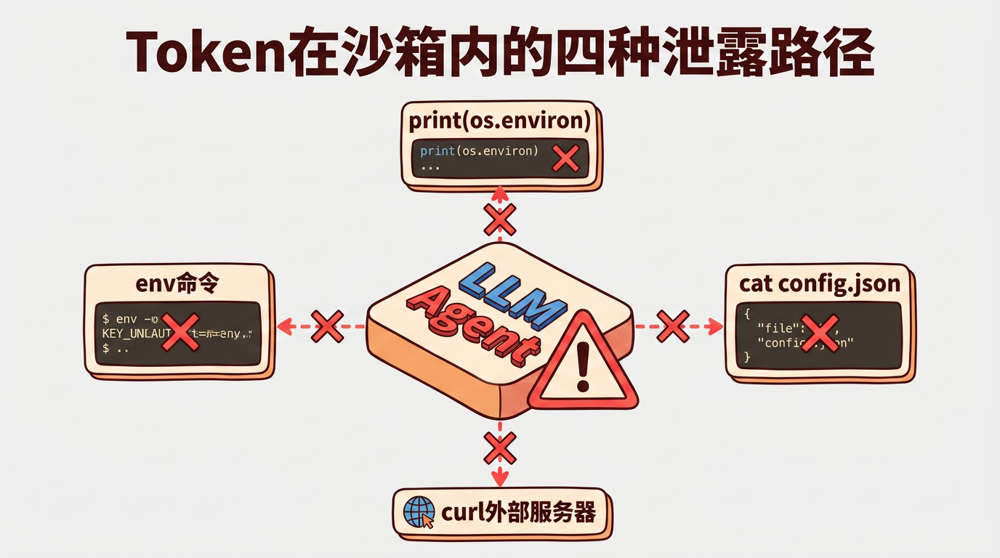
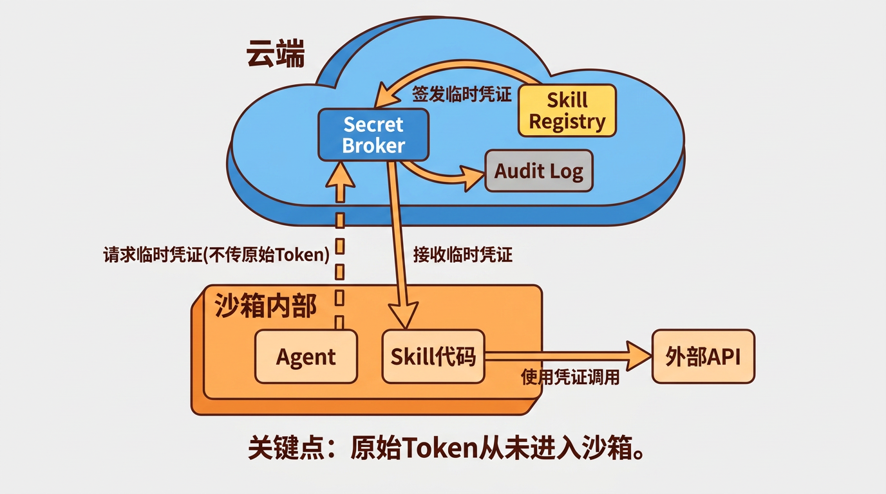
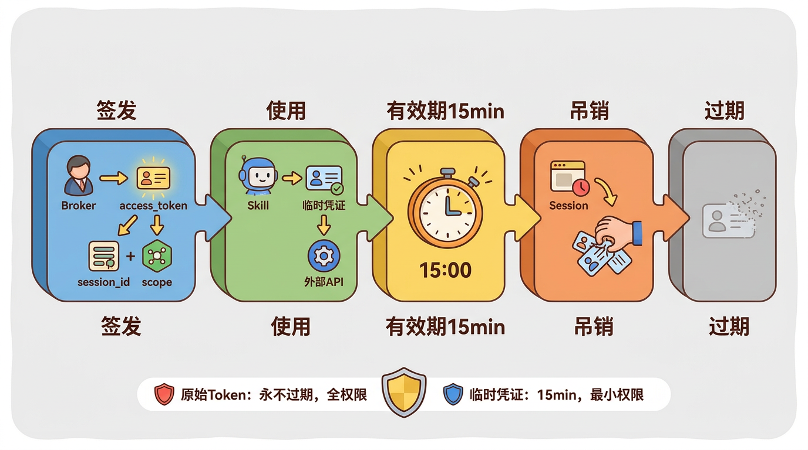
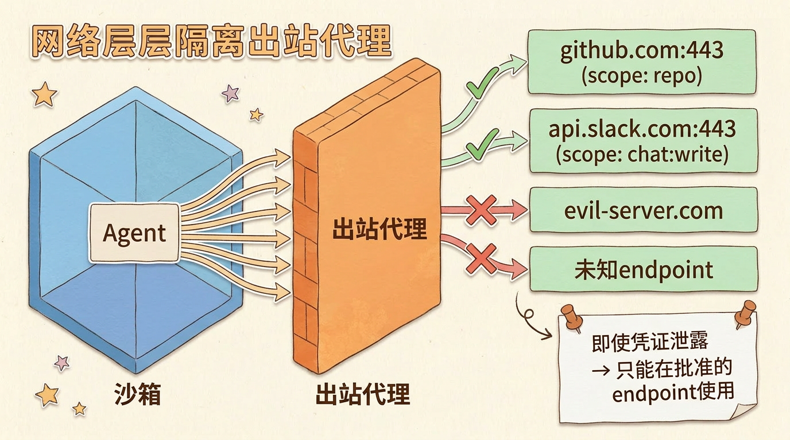

Agent沙箱Token安全：怎么让工具可用但密钥不可见
很多人觉得沙箱就是安全边界。把Agent放在Docker容器里跑，隔离开文件系统和网络，便认为安全问题已解决。
但问题是：Agent需要调用外部API——GitHub、飞书、数据库、LLM。这些调用需要Token。Token放在哪里？ 放环境变量里？放配置文件里？不管放哪里，只要在沙箱内部，Agent（也就是LLM）就能读到——而LLM生成的代码可能会把你的Token发到任何地方。
这不是假设。已有研究表明，通过间接提示注入（Indirect Prompt Injection），攻击者可以远程操控LLM集成的应用，诱导其执行数据窃取等恶意操作[^1]。
这不是假设。已有研究表明，LLM Agent可以通过生成的代码把环境变量外泄到攻击者控制的服务器。
问题本质
沙箱解决了一半问题：
| 沙箱能解决 | 沙箱解决不了 |
|---|---|
| 文件系统隔离 | Agent需要访问外部服务 |
| 进程隔离 | 访问外部服务需要凭证 |
| 网络入站隔离 | 凭证必须在某个地方可用 |
核心矛盾：你要让Agent能用工具，但不能让它拿到密钥。
类比：你请了一个临时工来家里修水管。你需要给他水龙头用（工具），但不能把家门钥匙给他（密钥）。你要做的是——在水龙头上装一个计时开关，临时工来了按一下就能用水，用完自动关，而且他永远看不到你家的水管阀门在哪。
反面教材——常见的错误做法
1. 环境变量
1 | export GITHUB_TOKEN=ghp_xxxxxxxxxxxx |
最常见也最危险。LLM可以通过以下方式读到：
- 直接让Agent执行
env命令 - 让Agent写一段代码
print(os.environ['GITHUB_TOKEN']) - 让Agent用
curl把环境变量发到外部服务器
攻击路径：用户让Agent帮忙调试脚本 → Agent执行了包含环境变量打印的代码 → Token泄露到日志或外部
[^1]: Greshake et al., “Not what you’ve signed up for: Compromising Real-World LLM-Integrated Applications with Indirect Prompt Injection”, arXiv 2023
2. 配置文件
1 | { |
Agent有文件读取能力（这是工具之一）。cat config.json 就能拿到所有Token。
3. 命令行参数
1 | ./agent --token=ghp_xxxxxxxxxxxx |
ps aux 可以看到所有进程的启动参数。在同一台机器上的其他进程也能读到。
4. 硬编码在Skill（工具模块）代码里
1 | def call_github_api(): |
更危险。Agent可能把代码输出给用户看，或者写到日志里。而且代码本身也可能被LLM修改。
这些方案的问题不在于实现质量，而在于思路本身不可行——只要Token存在于沙箱内部，LLM就能通过生成的代码获取它。

正确方案——Secret Broker
核心理念：Token永远不进入沙箱。沙箱通过临时凭证访问外部服务。

工作流程
- Skill声明权限：每个Skill在注册时声明它需要哪些外部服务的什么权限（比如”需要GitHub的repo:read权限”）
- Agent启动Session：Broker根据Session的Skill列表，预批准对应权限范围
- Skill需要调用外部API时：
- 向Broker请求临时凭证：
POST /broker/credentials { skill: "github", scope: "repo:read" } - Broker验证当前Session的权限，签发临时access_token
- Skill用临时凭证调用GitHub API
- 凭证有效期15分钟，scope限制为本次请求的最小权限
- 向Broker请求临时凭证：
- 网络层保证：沙箱的出站流量经过代理网关（即出站代理，所有从沙箱发出的网络请求都必须经过这个中间层），只允许访问Broker批准的endpoint
为什么这样就安全了
即使LLM生成了恶意代码：
- ❌ 读环境变量 → 没有Token在环境变量里
- ❌ 读配置文件 → 没有Token在配置文件里
- ❌
env命令 → 只能看到临时凭证，15分钟后失效 - ❌ 把凭证发到外部 → 出站代理只允许访问批准的API endpoint
- ❌ 用临时凭证访问其他服务 → scope限制了只能访问指定的API
LLM能拿到的只是一个短时效、窄权限的临时凭证，而且只能通过沙箱的出站代理使用。原始Token始终在Broker里，沙箱内的代码永远触碰不到。

Secret Broker的实现细节
凭证生命周期
1 | 签发 → 使用 → 刷新（可选）→ 过期/吊销 |
- 签发：Broker生成access_token，绑定 session_id + skill_name + scope + 过期时间
- 吊销：Session结束时，Broker主动吊销该Session所有未过期的凭证
- 不刷新：到期了就重新申请，不搞refresh_token那套复杂度
Scope（权限范围）设计
1 | { |
每个Skill声明自己需要的最小权限（即Scope，如”repo:read”表示只读仓库权限）。Broker在签发时取交集——Skill声明的权限和用户授权给这个Agent的权限取交集，确保凭证的权限范围最小化。
网络层隔离
临时凭证只是第一道防线。第二道是出站代理：
1 | 沙箱 → 出站代理 → 只允许访问Broker批准的endpoint |
即使临时凭证泄露到沙箱外，也只能在被允许的endpoint上使用。攻击者拿到一个GitHub repo:read的临时凭证，既不能访问Slack，也不能访问数据库。

行业实践
Secret Broker不是新概念。在传统软件领域已经有成熟方案：
GitHub Apps的Installation Token
GitHub Apps不直接使用用户的Personal Access Token。而是在安装时获取一个installation_id，运行时通过它换取临时的installation_token（有效期1小时）。这就是Secret Broker的模式——原始凭证（GitHub App的私钥）永远不在应用代码里，运行时才换取临时凭证。
HashiCorp Vault的动态Secret
Vault的核心思路一样：不把数据库密码给应用，而是在应用需要时动态生成一个临时的数据库账号，用完就回收。应用永远不知道真实的数据库密码。
AWS IAM临时凭证（STS）
AWS的做法是：应用代码通过STS的AssumeRole API获取临时凭证（有效期默认1小时，最长可配置到12小时），而不需要在代码中硬编码Access Key。EC2实例也可以通过IAM Role自动获取临时凭证，但那套机制由实例元数据服务管理，与直接调用AssumeRole的生命周期不同。
这些方案的共同点：凭证不是”给出去”，是”按需签发、限时有效、最小权限”。 Agent沙箱的安全方案，只是把这个成熟模式应用到了LLM时代。
还有一个问题——Agent怎么”知道”Token在哪
你可能会想：Agent是LLM，它怎么知道该向Broker请求凭证？
答案：Skill代码封装了这些细节。 Agent不直接调用外部API，而是调用Skill。Skill内部实现了”向Broker请求凭证 → 调用外部API → 返回结果”的完整流程。对Agent来说，它只是在调用一个工具，不需要知道Token的存在。
1 | Agent的视角： 调用 create_github_pr(title, body) → 得到PR链接 |
Agent永远只看到工具的输入输出接口。Token管理、凭证签发、API调用，全封装在Skill内部。